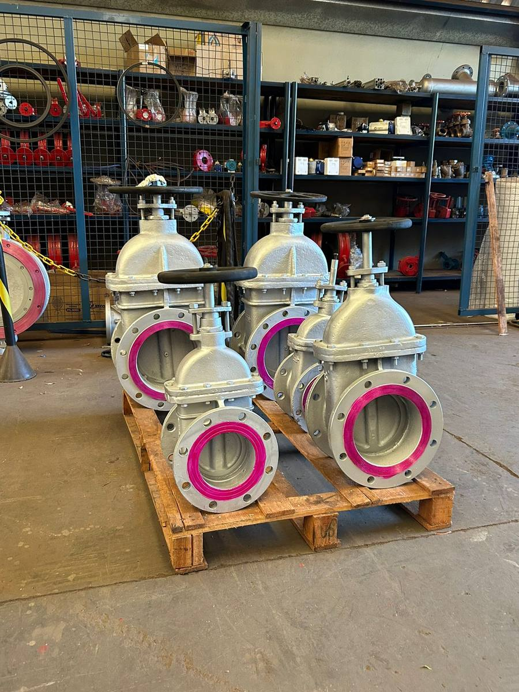
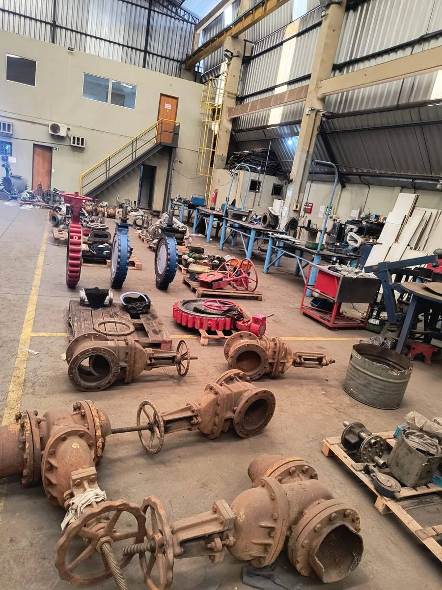
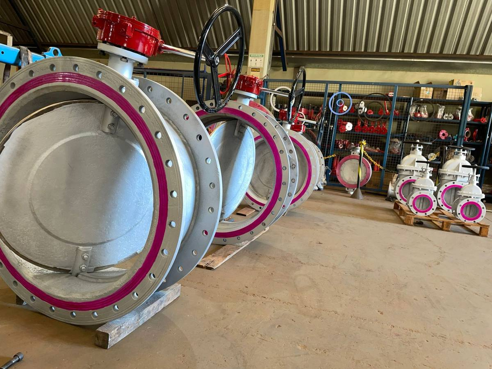
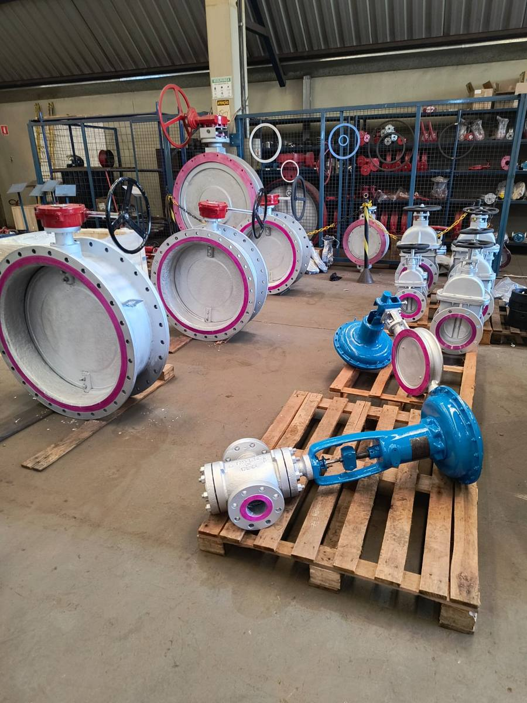
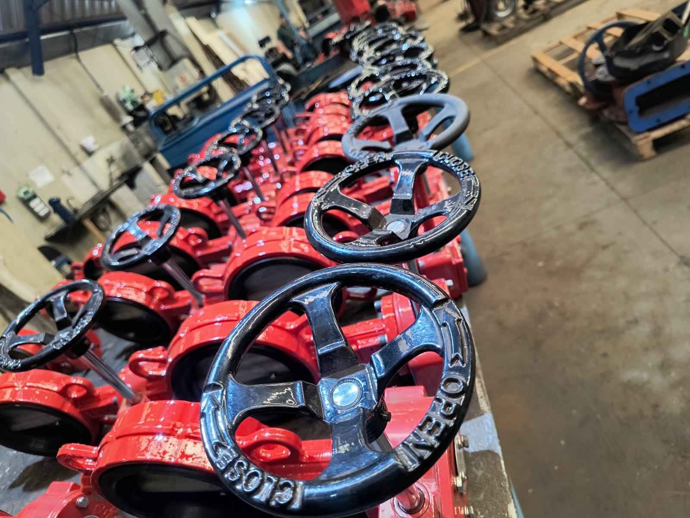
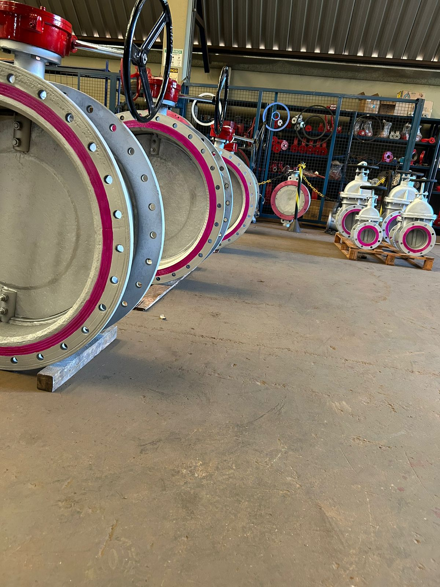
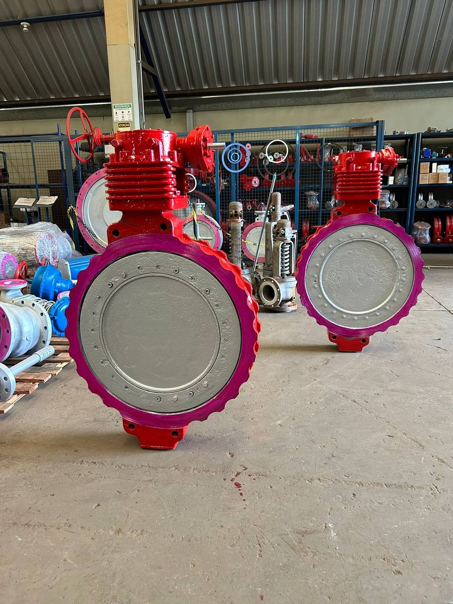
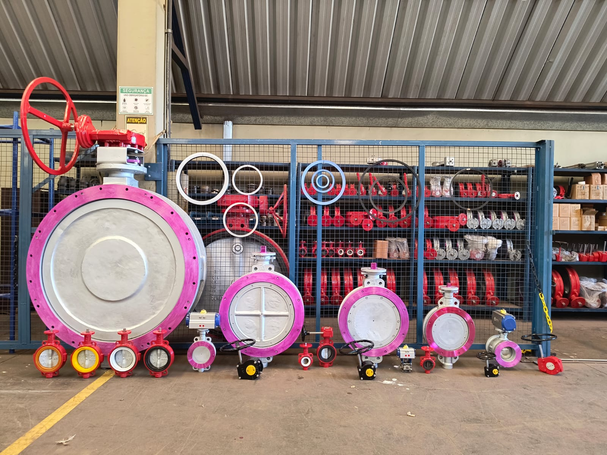
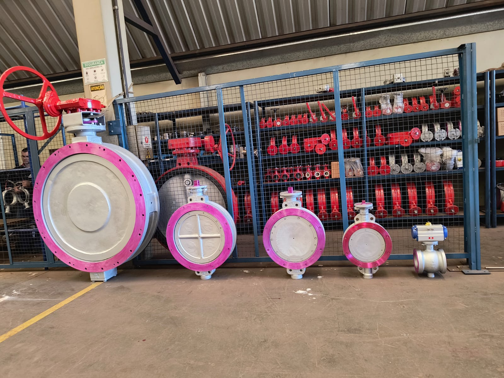

Válvulas e Equipamentos Industriais
Fornecimento, automação e manutenção de válvulas industriais com engenharia especializada — atendemos todo o território nacional.

Válvulas projetadas para as condições mais críticas de pressão e temperatura.
Processo completo: recebimento, diagnóstico e reparo no barracão ou in loco.
Revendedores oficiais das válvulas W.Burger — referência nacional há 80 anos.
Sobre nós
A NEW Válvulas e Equipamentos Industriais, sediada em Sertãozinho/SP, atua no fornecimento, automação e manutenção de válvulas industriais, atendendo todo o território nacional.
Com equipe técnica especializada, entregamos soluções sob medida para os segmentos mais exigentes da indústria brasileira.
Segmentos atendidos
Catálogo
Válvulas industriais de alta performance e acessórios para automação, atendendo às mais exigentes especificações técnicas.
Válvula borboleta de alta performance com duplo offset para serviços críticos de alta pressão e temperatura.
Válvula borboleta wafer/lug para controle e isolamento em sistemas industriais diversos.
Válvula de retenção wafer para prevenção de refluxo em sistemas de bombeamento e processos industriais.
Posicionador 4–20 mA para atuadores de ação simples e dupla, com carcaça robusta para ambientes hostis.
Atuador de dupla ou simples ação para automação de válvulas, conforme padrão ISO 5211 / NAMUR.
Válvula solenóide direcional 5/2 vias para controle de atuadores pneumáticos de dupla ação.
Redutor de engrenagens para acionamento manual de válvulas de grande porte com flange ISO 5211.
O que fazemos
Soluções completas do recebimento até a entrega em campo, com rigoroso controle técnico e rastreabilidade.
Fluxo técnico rigoroso com rastreabilidade em cada etapa:
Conferência e listagem completa dos equipamentos na chegada.
Avaliação detalhada com relatório técnico e laudo fotográfico.
Industrialização conforme especificações técnicas originais.
Atendimento no barracão ou diretamente em campo.

Executamos montagens industriais completas com alto padrão de qualidade. Atuamos desde a preparação até a instalação final de equipamentos, tubulações e sistemas industriais.
Fabricamos componentes industriais sob medida com processos modernos de industrialização e rigoroso controle de qualidade.
Estrutura
Amplo estoque de válvulas industriais prontas para entrega, com capacidade para grandes pedidos.







Somos revendedores oficiais das válvulas de segurança e alívio W.Burger, marca reconhecida nacionalmente pela excelência e tradição — com quase 80 anos de experiência no setor industrial.
Amplamente utilizadas em caldeiras, sistemas de vapor e processos petroquímicos, as válvulas W.Burger são referência em segurança e confiabilidade.
Fale conosco
Nossa equipe técnica está pronta para ajudar a encontrar a solução ideal para a sua aplicação. Entre em contato hoje mesmo.